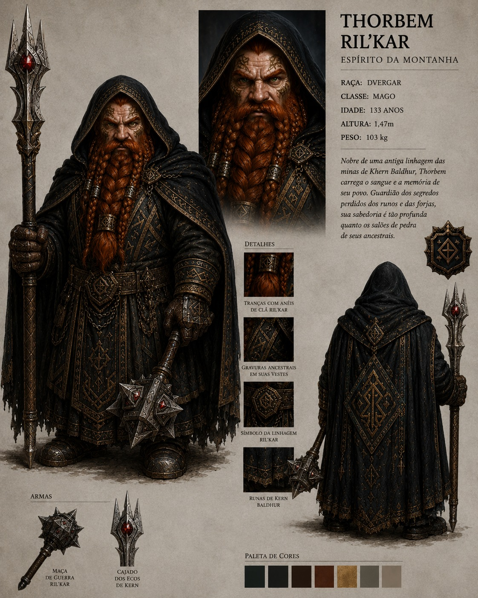

14
Força
Capacidade física e combate corpo a corpo.
Códice de Elyndrath
Espírito da Montanha
Mago Dvergar de Khern Baldhur, Thorbem carrega nas mãos o peso das minas, a disciplina da corte e a curiosidade inquieta de quem trocou o destino familiar pelos caminhos da alquimia e do arcano.
Origem
Thorbem vem de uma antiga linhagem da mina de Khern Baldhur. Os Goldstone foram reconhecidos por séculos de trabalho, mineração, ligas e joias durante o período de ascensão do reino anão.
Apesar da força comum aos Dvergar, Thorbem nunca se destacou nas artes tradicionais de mineração e fabricação. Seu olhar se voltou para a magia e a alquimia, caminhos menos esperados para alguém de sua casa.
Atributos
Thorbem combina resistência física e sabedoria excepcional. Sua força não está apenas no corpo ou no metal, mas na interpretação de símbolos, substâncias, presságios e estruturas antigas.
14
Capacidade física e combate corpo a corpo.
-5
Movimento pesado, pouca sutileza e baixa furtividade.
15
Resistência, saúde e tolerância a dor.
10
Análise, investigação e conhecimento arcano.
30
Conhecimento do mundo, magia e identificação de forças antigas.
Ofício
Thorbem é proficiente em armas leves, armas à distância e de arremesso, além de alquimia. Carrega maça, cajado, armadura de placas e escudo kite, unindo proteção anã a estudo arcano.
Sua magia não nega sua origem: parece nascer de inscrições, metais, minerais, fórmulas e reações. Onde outros veem rocha morta, Thorbem enxerga memória comprimida pelo tempo.
Jornada
Aos 30 anos, visto como o membro menos produtivo de sua família, Thorbem deixou sua mina natal para desenvolver habilidades próprias. Vagou por cidades, florestas e montanhas até alcançar Uyothalor, lar de Unarith, grande instituição de magia e conhecimento arcano.
Depois de mais de 50 anos de dedicação, retornou a Khern Baldhur como mago experiente e respeitado. Foi nomeado conselheiro real, serviu por 30 anos e, há cerca de 6 anos, recebeu permissão para partir em uma segunda odisseia pelo continente.
Galeria
